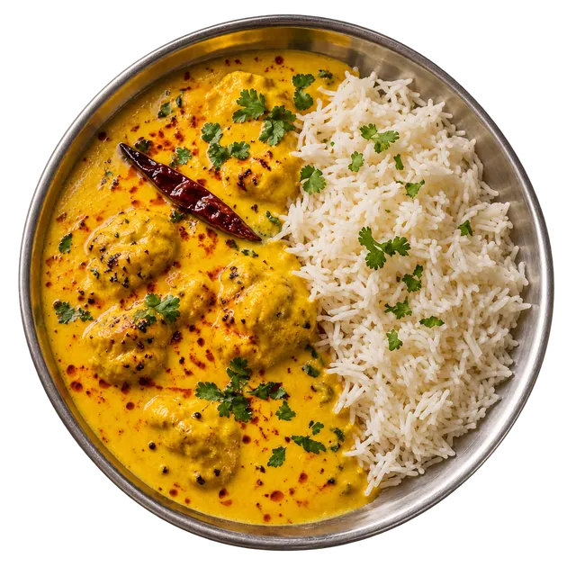
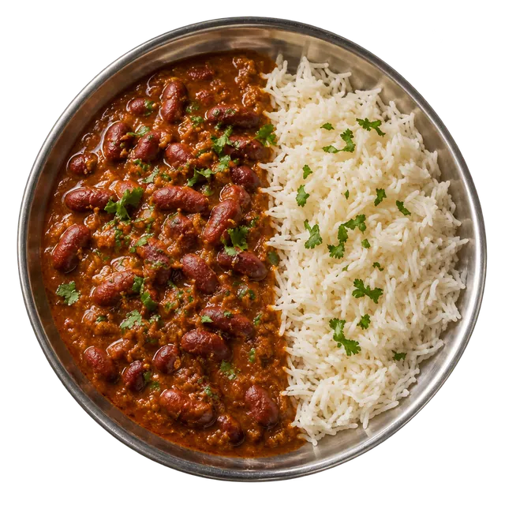
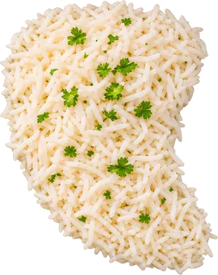
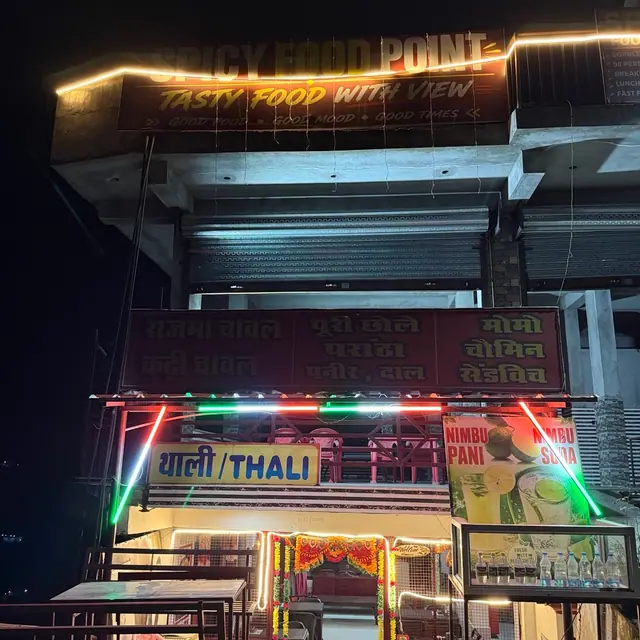

थाली
House Thali
Kadhi, rajma, rice, two rotis, and an onion and green chilli salad.
See what goes into itSPICY FOOD POINT · DUNDIARA
Tangy golden kadhi or rich, slow-cooked rajma? Enjoy your favourite with fluffy rice on your way to Dalhousie.
Pure Vegetarian · Near Banikhet
Open every day, 7 AM – 9 PM


OUR TWO SIGNATURES · YOUR TOUGH CHOICEIllustrative food imagery
INSIDE OUR HOUSE THALI
Rice, kadhi, rajma, two rotis, and a little crunch. Scroll to discover how our House Thali comes together.
Pure Vegetarian · Near Banikhet
Open every day, 7 AM – 9 PM



Scroll to fill your thali
Illustrative food imagery
YOUR STOP NEAR BANIKHET
Enjoy familiar favourites on the Pathankot–Dalhousie road. Find Spicy Food Point in Dundiara, about 8 km before Banikhet when travelling from Nainikhud.
Plan Your Visit
GOOGLE MAPS REVIEWS
“Great Food with a Beautiful View”
“Good place for any meal.”
“Had an amazing experience here with plenty of options available”
ON THE PATHANKOT–DALHOUSIE ROAD
Find us in Dundiara, about 8 km before Banikhet when coming from Nainikhud. Look for the Spicy Food Point sign.